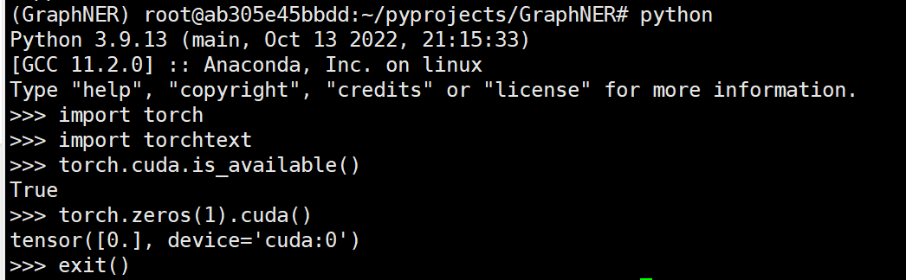
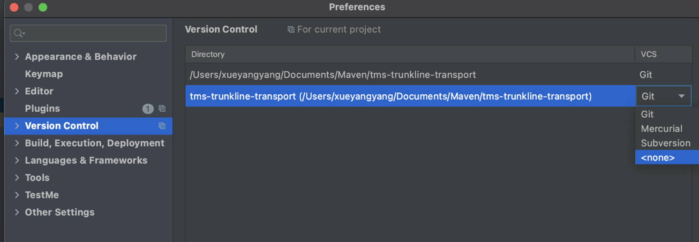
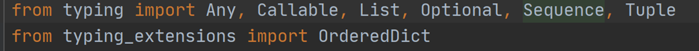
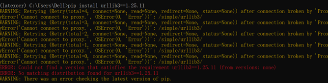
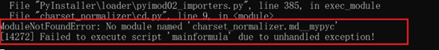
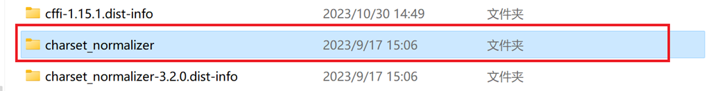
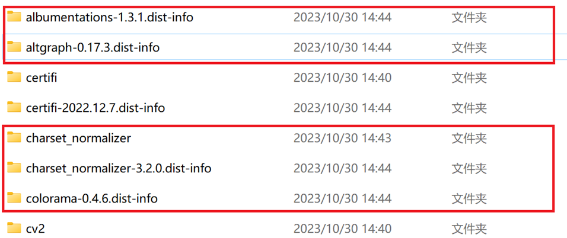

报错解决记录-算法篇
（持续更新）
完成时间：2024-03-29
1. StopIteration: Caught StopIteration in replica 0 on device 0.
原因：使用预训练模型时，原预训练是多卡训练调用时使用单卡，出现问题
2. OSError: We couldn't connect to 'https://huggingface.co' to load this file, couldn't find it in the cached files and it looks like bert-base-cased is not the path to a directory containing a file named config.json. Checkout your internet connection or see how to run the library in offline mode at 'https://huggingface.co/docs/transformers/installation#offline-mode'.
出现这个问题即无法使用huggingface在线下载预训练BERT
解决：可以将预训练BERT down下来，进行离线加载和使用
3. NVIDIA GeForce RTX 3090 with CUDA capability sm_86 is not compatible with the current PyTorch installation.The current PyTorch install supports CUDA capabilities sm_37 sm_50 sm_60 sm_70.
If you want to use the NVIDIA GeForce RTX 3090 GPU with PyTorch, please check the instructions at https://pytorch.org/get-started/locally/
RuntimeError: CUDA error: no kernel image is available for execution on the device
出现这个问题表示目前安装的torch和cuda的版本与目前GPU不匹配（即版本问题）
解决：重新安装合适的版本：cuda11.1 torch1.8.1

4. Anaconda导入导出环境：
（1）导出：conda env export > E:\Learning\FormulaRecognition\environment.yaml
（2）导入：conda env create -f environment.yaml
5. 将代码中.git文件夹删除以后，报错日志“Invalid VCS root mapping: The directory E:\Learning\FormulaRecognition is registered as a Git root, but no Git repositories were found there.”
解决：（如下图所示）

6. ImportError: cannot import name 'OrderedDict' from 'typing' (D:\Anaconda\Anaconda3\envs\latexocr\lib\typing.py)
已解决：
（1） pip install typing_extensions
（2） 修改上文提及的maxvit.py文件，不从typing中导入OrderedDict模块，而是从typing_extensions中导入，即可解决问题。

7. ImportError: urllib3 v2.0 only supports OpenSSL 1.1.1+, currently the 'ssl' module is compiled with 'OpenSSL 1.1.0h 27 Mar 2018'.
已解决：
如果不升级OpenSSL，可以通过降低urlib3的版本来解决冲突使用以下命令来降低urlib3的版本:pip install urllib3==1.25.11
8. WARNING: There was an error checking the latest version of pip.
已解决：
如果不升级OpenSSL，可以通过降低urlib3的版本来解决冲突使用以下命令来降低urlib3的版本:pip install urllib3==1.25.11
9. 出现如图所示的情况：

已解决：关闭VPN，连接稳定WiFi即可解决
10. pyinstaller打包：最常见的是运行打包软件以后出现找不到模块的情况(具体如图)：

解决方法：
在需要打包的py文件中加上import charset_normalizer，然后把环境(比如D:\Anaconda\Anaconda3\envs\latexocr\Lib\site-packages)中的charset_normalizer文件夹放到dist文件下，并把环境中带有.dist-info的文件夹放到dist下


11. 数据问题1：UnicodeDecodeError: 'gbk' codec can't decode byte 0x93 in position 2980: illegal multibyte sequence
已解决：增加encoding='utf-8'
代码示例：
(1) with open('file.txt', encoding='utf-8') as f:
(2) # 处理文件内容
12. 数据问题2：TypeError: cannot unpack non-iterable NoneType object
已解决：
数据中存在空行和空格，或者存在字段缺失的情况，需要编写python脚本查看是否存在空行空格和字段缺失的情况，如果存在就去掉。
13. 关于导入的问题：出现“non-default parameter follows default parameter”这样的错误
已解决：需要在实例化时保证参数的顺序正确
在函数或类的构造函数中，没有默认值的参数（non-default parameter）跟在了有默认值的参数（default parameter）之后。在Python的函数定义中，所有带有默认值的参数必须位于没有默认值的参数之后。
14. 查看CUDA情况：
nvidia-smi
15. 出现IndexError：
写一个异常处理，因为是索引错误，一般是数据集的问题，没有处理好，或者数据某一条出现超过最大索引的情况